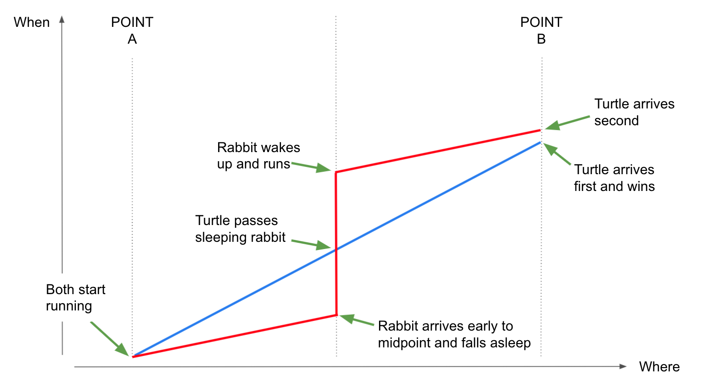

The Curvature of Gravitation
Motivation
The current theory of gravity tells a story about objects that curve (or bend or distort) space-time.
When no other forces exist, objects will move in straight paths at a constant speed.
However, on a curved space-time, these straight paths behave differently than what our intuition tells us.
And then, what we see in nature are planets orbiting the sun, and apples accelerating towards the ground.
The aim of this presentation is to give an intuitive view of what is this curved space-time.
We will explain
What is a straight line on a curved space, and how looking at straight lines can expose the curvature of the space.
How can we unite space and time into a single geometrical entity called a four-dimensional space-time
How gravity bends that space-time, and how straight lines look on it
The visualization of gravity curving space should not have been difficult.
Unfortunately, if you Google the term "curved space time" and go to the "Images" tab,
you will be staring at various beautiful pictures with one common problem -
they do not correctly describe the true nature of the curvature of gravity.
Quick History - Gravitation 1.0; Gravitation 2.0
Apples fall to the ground, and planets orbit around the sun. Isaac Newton connected both findings, explaining that
bodies with mass attract other bodies, causing them change their motion.
The calculation of the attraction force between mass 1 and mass 2 is given by the formula
. F , equals G Mass 1 times Mass 2, divided by square of the distance between the masses
\[F=\frac{GM_1M_2}{R^2}\]
In 1905, Albert Einstein introduced the theory of relativity. He then tried to generalize the theory to include
accelerated motion. The result (in 1915) was a more general theory, to be later known as "General Relativity". The theory gave
a new explanation to both acceleration and also the attractive forces of gravity. So it became a new theory for gravity.
The idea was that masses distort the "fabric of space-time". In this space-time,
the motion of all the stuff (massive objects but also light!) is distorted as well,
so they follow curved paths in the curved space-time. A new formula gives the
connection between "Energy-Momentum T", which is roughly the new name for Mass, and the geometric distortion of space-time,
now called "Einstein Curvature G". Both G and T are evaluated at each point of space, and at each moment of time.
The formula looks simple, but this is misleading. \[G=T\]
In reality, the equation is so complicated, that in most cases, we can't solve it (except for some super simple situations).
Let's forget about equations for a moment, and take a good look at what Einstein was suggesting.
Gravitation is NOT a force! Masses to not attract each other.
Gravitation is all about reshaping the geometry of the world, changing distances between points,
and making new roads for other masses to travel on.
Then masses follow these new roads as their default path, without and sense of being forced to do so.
The natural free motion is along the curved paths made by gravity.
These statements are a bit difficult to understand. To make it worse, Einstein did not suggest changing the
geometry of our three-dimensional space. We first need to include a new fourth dimension of time, then treat
all that as a unified four-dimensional object called Space-Time. Only then can we start messing with its geometry.
What is this curved space-time that makes gravity? How can we visualize it? This is the goal of our presentation.
So let's talk about curved spaces.
Straight Lines on Curved Spaces
Let's compare a curved surface to a non-curved (or flat) one. We can tell the difference by just
looking at them. It is less obvious from a "top view", so press "side view" for a better look.
You can also use the mouse to change the view as you wish
(Guide here).
Can you see the curvature?
We can imagine drawing a straight line on a flat surface, but could there be a straight line on a curved surface?
While there is an exact mathematical equation for a straight line on a curved space, we want to suggest a more
intuitive way to look at it. Think about our surface as the field of a golf course, with all its hills and valleys.
Then try to drive a golf cart on that field. Hold firmly to the steering wheel pointed at the forward position, and don't let
it change. If you were driving on a flat field, your path would be straight. However, driving through hills and
valleys will cause your cart to change direction. Even though your path is the straightest path possible.
Let's look at examples of such paths. Press the following buttons to put some lines on both surfaces.
Lines start at the same point on each surface, and also with same initial direction, but the lines continue differently
as they cling to the surface.
Two lines
Parallels
Spreading
More Spreading
Clear Lines
Some things that are special to straight lines on curved surfaces, like there could be more than
a single straight line between the same two points, and parallel lines may meet. Such things do not depend on
the view point, so they still exist even if we are viewing the surface from the top. From this view point
the curvature is a bit obscured, but the straight lines continue to tell the tail of a curved surface.
This is important, because when we start talking about a curved three-dimensional space, we do not have the
option to step out and directly look the curvature from a higher dimensional point. So tracking
the paths of the straight lines becomes a valuable option.
While we live in a three-dimensional world, understanding curvature on three-dimensional spaces is not enough.
The curved object, that drives gravity, has four dimensions. The three dimensions of space and another single
dimension of time. Every "point" in that space is made out of 4 numbers (coordinates). Three numbers describe
the location of the "point", while an additional number marks the time. The "point" is no longer a position,
but rather an "event".
The Geometry of Space-time

Fig #st1# - Space Time
We want to describe space-time as a geometry. What could be the picture to draw? It should display all the
events that happen, and for each event show the location and also the time. The picture should include all
the events of some story.
For example, let's examine a race between a rabbit and a turtle.
Both start at point A racing towards point B. The rabbit is faster, but once it got to the mid-point of the race,
it fell asleep for some time, while the turtle continued past the rabbit. Later, the rabbit
woke up and continued to run, but it was too late.
The whole story is shown in the following picture. The rabbit's path is in red, and turtle gets the blue path.
Every point on this picture represents an event, that is something that happened at a certain exact location and at
a certain exact time.
The horizontal coordinate of an event holds the position, that is "Where", while the vertical holds the time, the "When".
If you see that some participant in the scenario, has a vertical line, this means that while time is passing,
position is not changing. This matches a participant staying put for some period of time, so no motion.
On the other hand, we never see a horizontal line, as this would have meant a participant being at
more than one position at the same time, which is not possible.
Such a map has two dimensions, one of space and one of time, jointly called Space-Time. We see all the points on
it (the events) and can draw lines between them. So we can treat them as if they belong to a geometry,
using geometrical terms, like length, slope, etc. While it is two-dimensional, the usual way is to say that it
has 1 + 1 (one plus one) dimensions. So we emphasize that there is one position dimension and one time dimension.
The physical space we live in is described using three coordinates to mark the position of a certain object.
If we want to talk of our space-time, it should have 3 + 1 (three plus one) dimensions. All together four dimensions.
Let's make a smaller step and talk about 2 + 1 dimensions. By that we mean, two dimensions of space with one dimension
of time. Again, we meet our rabbit and turtle, but now they are free to move on a two-dimensional plain.
So they race again, but not from point A to point B, but rather on a circular track. The full space-time will be, of course,
a three-dimensional thing (see below). The checkered floor marks the two coordinates of space, while the green
arrow is the time coordinate, the "When".
Top view
Side view
Side 2
Run Time
Reset Time
Do try playing around with the view of this 2 + 1 world. One interesting point of view is the "Top View".
It shows all the places where the two buddies were passing through. And that is the circle or the racetrack. On the other hand,
the "Side View" show the events including how time was playing into matter. So we can see each participant speed
(this is the slope of the line, the more fast you are the less steep is your line). Convince yourself that you
understand that the rabbit (red path) is generally faster than the turtle (blue path). See the vertical red
line that represents staying in place.
While each point of view teaches us some part of the full story, so we need to always change our point of view to get the
whole story and feel comfortable with what each part represents.
Another thing to look at is a single slice of time. Look at the current state of the floor.
It represents the state of the world at a certain moment, the time of the start of the race.
So we see the red and blue paths hit that floor plain, at a certain location.
This is the starting point of the race.
If we place the floor at a higher point, it would mean a later time into the race.
If we continuously move the floor upwards, we would advance in time and could track both paths through the entire race.
Press the "run time" button to let time pass and track the points where the paths hit the floor.
The Curved Space-time of Gravitation
So now we have some understanding about the thing we call space-time.
We have seen it from all angles, we understand the meaning of paths along space-time. What is still missing is how gravity
curve this space-time.
One thing we can do, is to list the straight paths created by gravity. For this, we will use
our knowledge about motions that gravity inspires. Yes, we are eventually back to "falling apples and orbiting planets".
So we will talk about the interaction between two bodies, one big against one small. Like the Earth against an apple,
or the Sun against the Earth. In both cases, the motion of the big object will feel little effect, so it would be
practically not moving (great! this is a simple vertical line in space-time, standing still!). That big
object will be the most significant contributor to the effect on space-time curvature. So the smaller object will
travel along a straight path in the unchanging curved space-time.
We will examine these paths below, where on the right there will be an animation of the motion like it look in our
three-dimensional world, while the left is the space-time view of a 2 + 1 dimensions.
Falling Apples
Orbiting Planets
Other Motions
Apples in free fall
We know what happens to an apple when we hold and apple on our hand and let go.
It moves straight down towards the earth in a growing speed.
Click Fall to see the simulation of the motion on
the right simulation window then look at the path in the space-time on the left side.
Did you notice that the initial direction of the apple in the space-time view is vertical.
This is because the apple was at rest at the beginning.
Throw the apple up in the air
Another well know path of our apple is to throw it up un the air. We know what's going to happen. The apple
will climb while loosing speed. Then from the top of the path, it will continue to accelerate down just as before.
Click Throw to see that simulation and see how this new
path differs from the previous one, of just dropping the apple.
Throw the apple down to the ground
In a similar manner we can also ask what happens if we throw the apple down.
Throw Down
Drop the apple, but at a later time
Remember that we are looking for straight lines in space-time experiencing gravitation. In that sense, the paths
of an apple that is being dropped now is different from the path of making the drop a bit later or a bit earlier
from now.
Drop Later/Earlier
Circular Orbit
Elliptic
So we had concerns about understanding curvature in three dimensions, but the real target is to get to four.
Are we lost? Not really, because gravitation effects are really intuitive and easy to grasp.
All we need to do is to take what we know about how gravitation affects objects and translate it into geometry.
Side View
Normal View
Top View